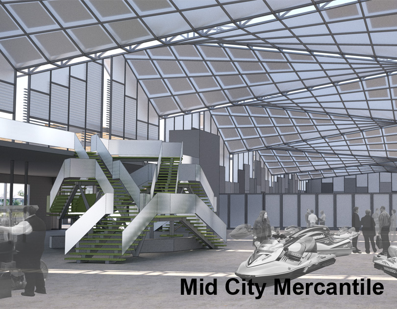

|  |
A New Market
The French Market, Crescent City Farmer's Market, and many other small retail markets can be found at points throughout the city of New Orleans. What the city lacks, however, is a space for trade shows and wholesale markets. This project is imagined as such a place—where manufacturers from around the country can come to showcase their goods to retailers.
The site along Bayou St. John is an ideal location for this type of building. Not only is it adjacent to other large factories and warehouses, the bayou has historically be a point where goods are brought into the city.
Since the proposed market venue would house a wide variety of events that change on a regular basis, a large volume is necessary to accomodate the varying scales of activity. On the edge of the bayou, the design problem is: how to break such a large volume down to the scale of the neighborhood?
Location |
New Orleans, LA |
Year |
Fall 2010 |
Type |
Academic (Fifth Year) |
Program |
Wholesale market & support spaces |